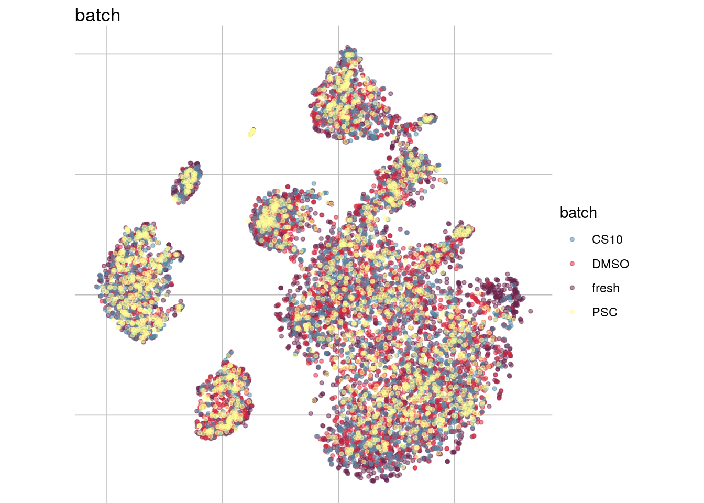
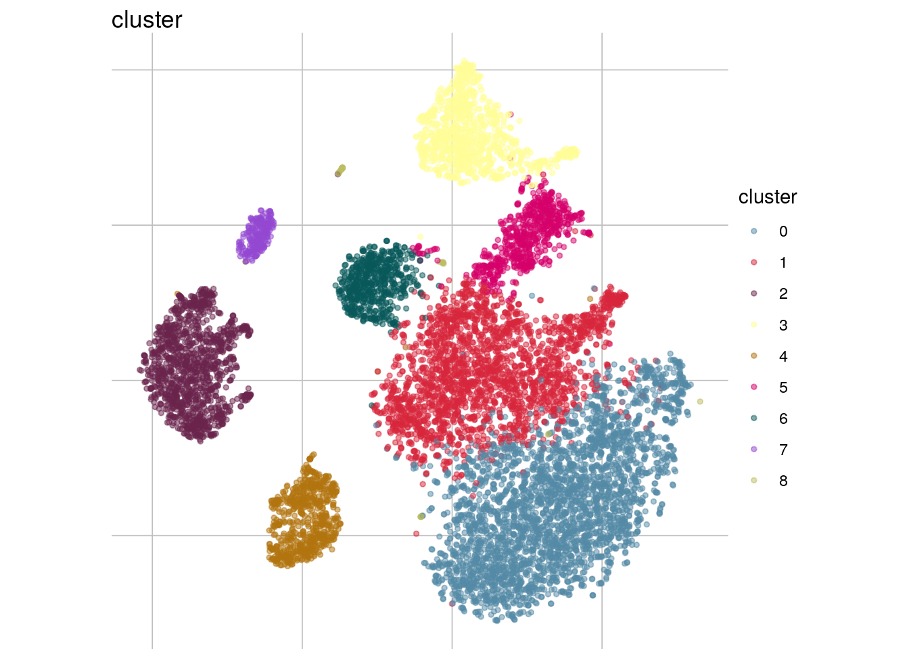
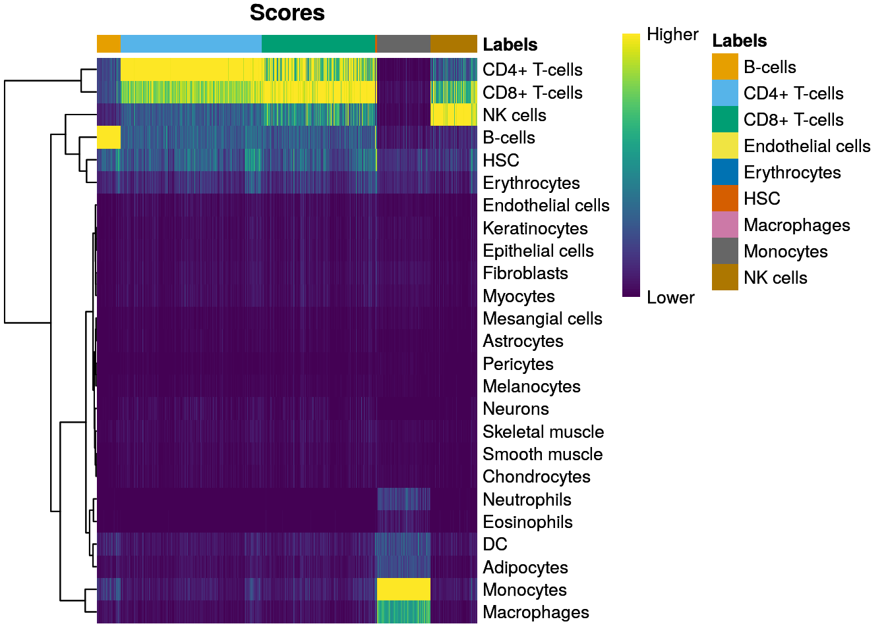
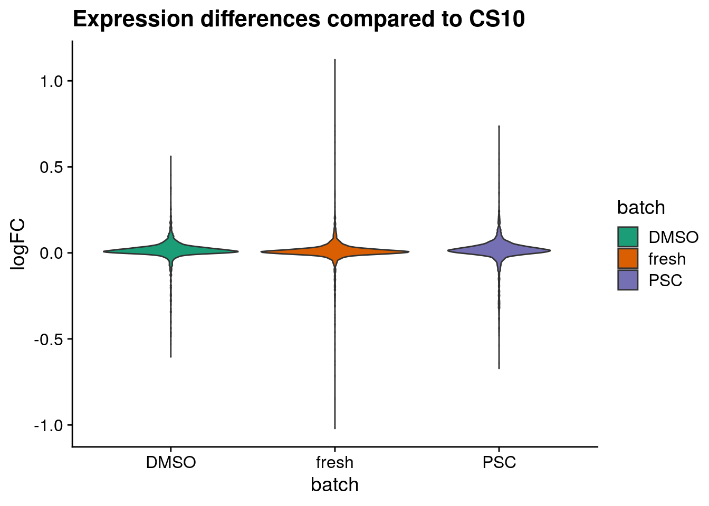
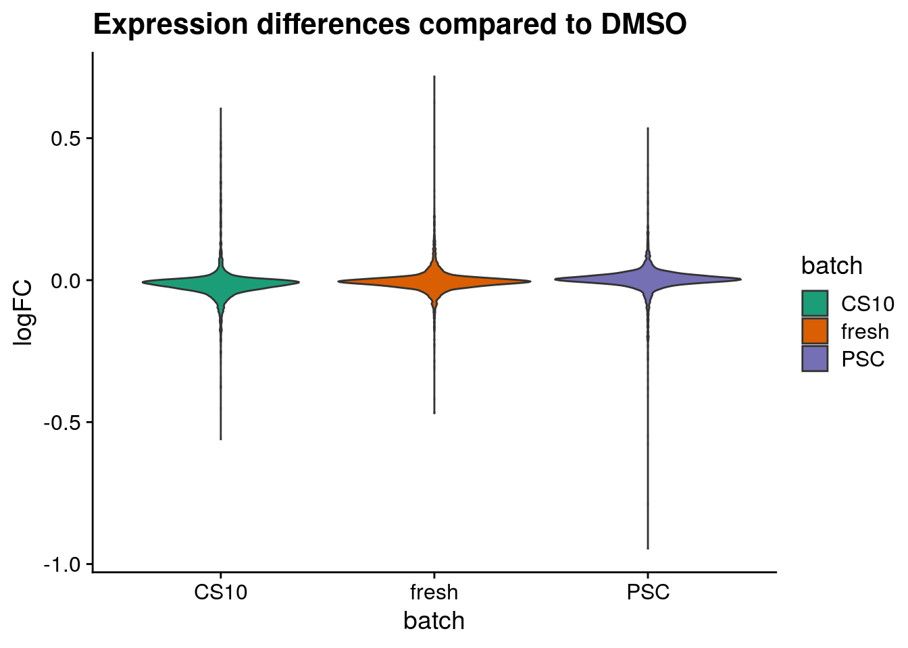
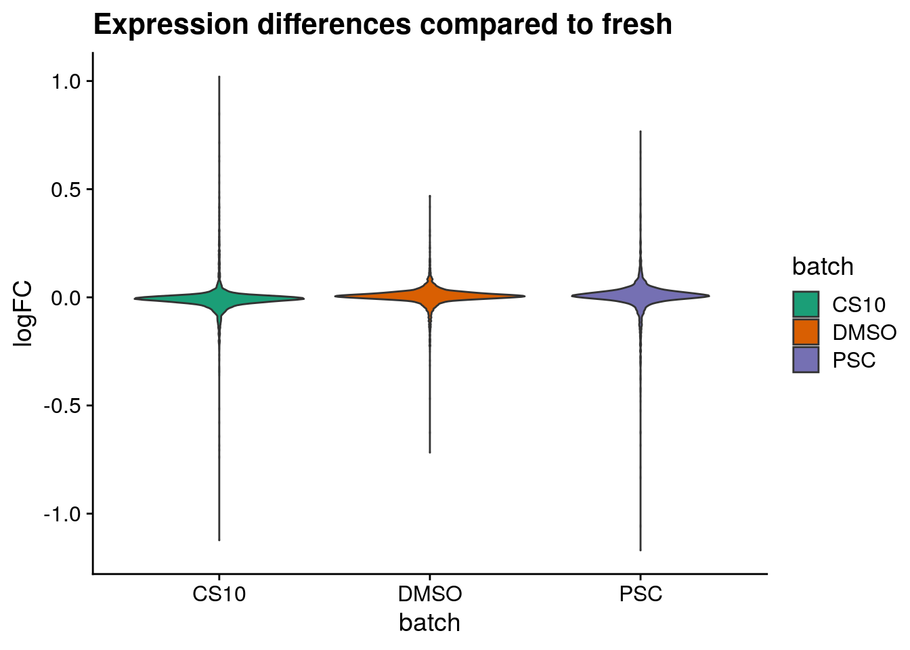
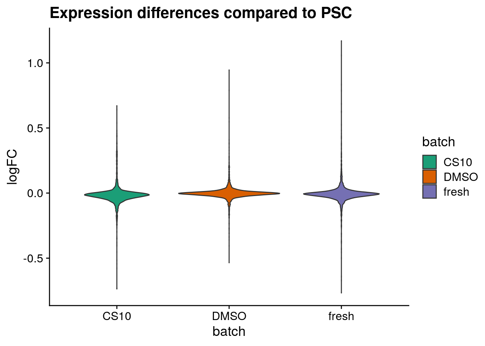

pbmc_roche
Almut Lütge
14 March 2021
Pbmc dataset Roche
This datset has been prepared by Roche. It contains pbmc from 4 different sample. Sample are derived from the same patient, have been processed in the same way and have been sequenced together. Experimental differences are due to different storage conditions. One sample was sequenced from fresh cells, the other ones have been stored in different media and frozen for a week.
suppressPackageStartupMessages({
library(pheatmap)
library(purrr)
library(scater)
library(dplyr)
library(ggplot2)
library(cowplot)
library(scran)
library(CellMixS)
library(magrittr)
library(here)
library(SingleR)
library(celldex)
library(Seurat)
library(broom)
library(tidyr)
library(ggridges)
})
seed <- 1000Data
Load data For processing check datasets: pbmc_roche
data_path <- here::here("out")
sce <- readRDS(file = paste0(data_path, "/sce_pbmc_roche.rds"))
dim(sce)## [1] 4756 10096#show data
visGroup(sce, group = "batch", dim_red = "tsne")
visGroup(sce, group = "cluster", dim_red = "tsne")
Celltype assignment singleR
ref <- BlueprintEncodeData()
rowData(sce)$ENS_ID <- gsub("\\..*","", rownames(sce))
rownames(sce) <- gsub(".*\\.","", rownames(sce))
pred <- SingleR(test=sce, ref=ref, labels=ref$label.main)
table(pred$labels)##
## B-cells CD4+ T-cells CD8+ T-cells Endothelial cells
## 641 3732 3005 1
## Erythrocytes HSC Macrophages Monocytes
## 5 43 2 1426
## NK cells
## 1241plotScoreHeatmap(pred)
Compare singleR assignments with clustering
tab <- table(Assigned=pred$pruned.labels, Cluster=sce$cluster)
pheatmap(log2(tab+10), color=colorRampPalette(c("white", "blue"))(101))
sce$singleR <- pred$pruned.labels
visGroup(sce, group="singleR", dim_red = "tsne")
Check marker genes
Marker genes for "seurat clustering"
marker_s <- findMarkers(sce, sce$cluster)
#plot summarized counts
plot_aggregated_expr <- function(sce, genes, group_var, title){
logNormExpres <- as.data.frame(t(as.matrix(logcounts(sce)[genes,]))) %>%
dplyr::mutate(cluster_all= colData(sce)[,group_var]) %>%
group_by(cluster_all) %>% summarise_all(mean)
logNormExpresMa <- logNormExpres %>% set_rownames(logNormExpres$cluster_all) %>%
dplyr::select(-cluster_all) %>% as.matrix() %>% t()
colnames(logNormExpresMa) <- levels(as.factor(colData(sce)[,group_var]))
rownames(logNormExpresMa) <- rownames(logNormExpresMa)
p <- pheatmap(logNormExpresMa, scale="row" ,treeheight_row = 0,
cluster_cols = F, cluster_rows = F,
color = colorRampPalette(c("#2166AC", "#F7F7F7", "#B2182B"))(50),
main=title, cellwidth=15, cellheight=10)
}
#plot marker
clust_names <- names(marker_s)
for (clust in clust_names) {
cat("#### ", clust, "{-}\n")
cluster_res <- marker_s[[clust]]
top_marker <- cluster_res[cluster_res$Top <= 6,]
print(p <- plot_aggregated_expr(sce, rownames(top_marker),
group_var = "cluster",
title = paste0("pbmc_seurat_", clust)))
cat("\n\n")
}0

1

2

3

4

5

6

7

8

Marker genes for "SingleR annotations"
#filter cell types with less than 10 cells
ct_filter <- names(which(table(sce$singleR) < 10))
sce <- sce[,!sce$singleR %in% ct_filter]
sce <- sce[,which(!is.na(sce$singleR))]
marker_single <- findMarkers(sce, sce$singleR)
#plot marker
clust_names <- names(marker_single)
for (clust in clust_names) {
cat("#### ", clust, "{-}\n")
cluster_res <- marker_single[[clust]]
top_marker <- cluster_res[cluster_res$Top <= 6,]
print(p <- plot_aggregated_expr(sce, rownames(top_marker),
group_var = "singleR",
title = paste0("pbmc_singleR_", clust)))
cat("\n\n")
}B-cells

CD4+ T-cells

CD8+ T-cells

HSC

Monocytes

NK cells

DE analysis
Wilcoxon and t-test
DE genes between all cells
# All conditions , blocking for celltypes
de_wilcox <- findMarkers(sce, groups = sce$batch,
test.type = "wilcox", block = sce$singleR,
full.stats = TRUE, log.p = TRUE)
de_ttest <- findMarkers(sce, groups = sce$batch, test.type= "t", block = sce$singleR,
full.stats = TRUE)
summarize_de <- function(de_list, target){
all_res <- lapply(names(de_list), function(cond){
cond2_list <- names(de_list)[!names(de_list) %in% cond]
cond_res <- lapply(cond2_list, function(cond2){
de_all <- de_list[[cond]][[paste0("stats.", cond2)]]
if( target %in% "AUC"){
de_filterted <- de_all[abs(de_all$AUC - 0.5) > 0.05 & exp(de_all$log.FDR) < 0.01,]
}else{
de_filterted <- de_all[ exp(de_all$log.FDR) < 0.01,]
}
n_de <- nrow(de_filterted)
}) %>% unlist() %>% cbind(.,cond2_list) %>% as.data.frame() %>% set_colnames(c("DE", "batch2"))
}) %>% set_names(names(de_list)) %>% bind_rows(.id = "batch1")
}
summarize_dist <- function(de_list, target){
all_res <- lapply(names(de_list), function(cond){
cond2_list <- names(de_list)[!names(de_list) %in% cond]
cond_res <- lapply(cond2_list, function(cond2){
de_all <- de_list[[cond]][[paste0("stats.", cond2)]]
if( target %in% "AUC"){
dist <- de_all$AUC
}else{
dist <- de_all$logFC
}
dist
}) %>% set_names(cond2_list) %>% bind_cols()
}) %>% set_names(names(de_list))
}
sum_de_wilcox <- summarize_de(de_wilcox, target = "AUC")
sum_de_t <- summarize_de(de_ttest, target = "logFC")
sum_dist_wilcox <- summarize_dist(de_wilcox, target = "AUC")
sum_dist_t <- summarize_dist(de_ttest, target = "logFC")Plot DE
Wlicoxon
sum_de_wilcox$DE <- as.numeric(sum_de_wilcox$DE)
# Plot de_genes
p <- ggplot(data = sum_de_wilcox, aes(x = batch1, y = batch2, colour= DE)) +
geom_point(aes(size = DE)) +
theme(axis.title.x = element_blank(), axis.title.y = element_blank()) +
scale_colour_viridis_c() +
labs(
x = 'Batch',
y = 'Batch') +
guides(color= guide_legend(), size=guide_legend()) +
theme_cowplot() +
scale_size(range = c(4,14)) +
ggtitle("Filtered DE genes using Wilcoxon test")
p 
t-test
sum_de_t$DE <- as.numeric(sum_de_t$DE)
# Plot de_genes
p <- ggplot(data = sum_de_t, aes(x = batch1, y = batch2, colour= DE)) +
geom_point(aes(size = DE)) +
theme(axis.title.x = element_blank(), axis.title.y = element_blank()) +
scale_colour_viridis_c() +
labs(
x = 'Batch',
y = 'Batch') +
guides(color= guide_legend(), size=guide_legend()) +
theme_cowplot() +
scale_size(range = c(4,14)) +
ggtitle("DE t-test")
p 
Plot logFC distributions
plot_dist <- function(batch_nam, tab){
tab_dist <- tab[[batch_nam]]
gathercols <- colnames(tab_dist)
dist_long <- gather(tab_dist, "batch", "valuecol", all_of(gathercols),
factor_key=TRUE)
ggplot(dist_long, aes_string(x="batch", y="valuecol", fill="batch")) +
geom_violin() +
labs(title=paste0("Expression differences compared to ", batch_nam),
x="batch",
y = "logFC") +
scale_fill_brewer(palette="Dark2") +
theme_cowplot()
}
for (batch in names(sum_dist_t)) {
cat("#### ", batch, "{-}\n")
ps <- plot_dist(batch, tab = sum_dist_t)
print(ps)
cat("\n\n")
}CS10

DMSO

fresh

PSC

Cell-type-wise DE
for (ct in levels(as.factor(sce$singleR))) {
cat("#### ", ct, "{-}\n")
sce_new <- sce[, sce$singleR %in% ct]
de_wilcox <- findMarkers(sce_new, groups = sce_new$batch,
test.type = "wilcox",
full.stats = TRUE, log.p = TRUE)
sum_de_wilcox <- summarize_de(de_wilcox, target = "AUC")
sum_de_wilcox$DE <- as.numeric(sum_de_wilcox$DE)
p <- ggplot(data = sum_de_wilcox, aes(x = batch1, y = batch2, colour= DE)) +
geom_point(aes(size = DE)) +
theme(axis.title.x = element_blank(), axis.title.y = element_blank()) +
scale_colour_viridis_c() +
labs(
x = 'Batch',
y = 'Batch') +
guides(color= guide_legend(), size=guide_legend()) +
theme_cowplot() +
scale_size(range = c(4,14)) +
ggtitle(paste0("filtered DE Wilcoxon test in ", ct))
print(p)
cat("\n\n")
}B-cells

CD4+ T-cells

CD8+ T-cells

HSC

Monocytes

NK cells
 ### session Info
### session Info
sessionInfo()## R version 4.0.3 (2020-10-10)
## Platform: x86_64-pc-linux-gnu (64-bit)
## Running under: Ubuntu 18.04.5 LTS
##
## Matrix products: default
## BLAS: /usr/lib/x86_64-linux-gnu/openblas/libblas.so.3
## LAPACK: /usr/lib/x86_64-linux-gnu/libopenblasp-r0.2.20.so
##
## locale:
## [1] LC_CTYPE=de_DE.UTF-8 LC_NUMERIC=C
## [3] LC_TIME=de_DE.UTF-8 LC_COLLATE=de_DE.UTF-8
## [5] LC_MONETARY=de_DE.UTF-8 LC_MESSAGES=de_DE.UTF-8
## [7] LC_PAPER=de_DE.UTF-8 LC_NAME=C
## [9] LC_ADDRESS=C LC_TELEPHONE=C
## [11] LC_MEASUREMENT=de_DE.UTF-8 LC_IDENTIFICATION=C
##
## attached base packages:
## [1] parallel stats4 stats graphics grDevices utils datasets
## [8] methods base
##
## other attached packages:
## [1] ggridges_0.5.3 tidyr_1.1.3
## [3] broom_0.7.5 SeuratObject_4.0.0
## [5] Seurat_4.0.0 celldex_1.0.0
## [7] SingleR_1.4.1 here_1.0.1
## [9] magrittr_2.0.1 CellMixS_1.6.1
## [11] kSamples_1.2-9 SuppDists_1.1-9.5
## [13] scran_1.18.5 cowplot_1.1.1
## [15] dplyr_1.0.5 scater_1.18.6
## [17] ggplot2_3.3.3 SingleCellExperiment_1.12.0
## [19] SummarizedExperiment_1.20.0 Biobase_2.50.0
## [21] GenomicRanges_1.42.0 GenomeInfoDb_1.26.2
## [23] IRanges_2.24.1 S4Vectors_0.28.1
## [25] BiocGenerics_0.36.0 MatrixGenerics_1.2.1
## [27] matrixStats_0.58.0 purrr_0.3.4
## [29] pheatmap_1.0.12
##
## loaded via a namespace (and not attached):
## [1] utf8_1.1.4 reticulate_1.18
## [3] tidyselect_1.1.0 RSQLite_2.2.3
## [5] AnnotationDbi_1.52.0 htmlwidgets_1.5.3
## [7] grid_4.0.3 BiocParallel_1.24.1
## [9] Rtsne_0.15 munsell_0.5.0
## [11] codetools_0.2-18 ica_1.0-2
## [13] statmod_1.4.35 future_1.21.0
## [15] miniUI_0.1.1.1 withr_2.4.1
## [17] colorspace_2.0-0 highr_0.8
## [19] knitr_1.31 ROCR_1.0-11
## [21] tensor_1.5 listenv_0.8.0
## [23] labeling_0.4.2 GenomeInfoDbData_1.2.4
## [25] polyclip_1.10-0 farver_2.1.0
## [27] bit64_4.0.5 rprojroot_2.0.2
## [29] parallelly_1.23.0 vctrs_0.3.6
## [31] generics_0.1.0 xfun_0.22
## [33] BiocFileCache_1.14.0 R6_2.5.0
## [35] ggbeeswarm_0.6.0 rsvd_1.0.3
## [37] locfit_1.5-9.4 bitops_1.0-6
## [39] spatstat.utils_2.0-0 cachem_1.0.4
## [41] DelayedArray_0.16.2 assertthat_0.2.1
## [43] promises_1.2.0.1 scales_1.1.1
## [45] beeswarm_0.3.1 gtable_0.3.0
## [47] beachmat_2.6.4 globals_0.14.0
## [49] goftest_1.2-2 rlang_0.4.10
## [51] splines_4.0.3 lazyeval_0.2.2
## [53] BiocManager_1.30.10 yaml_2.2.1
## [55] reshape2_1.4.4 abind_1.4-5
## [57] backports_1.2.1 httpuv_1.5.5
## [59] tools_4.0.3 ellipsis_0.3.1
## [61] jquerylib_0.1.3 RColorBrewer_1.1-2
## [63] Rcpp_1.0.6 plyr_1.8.6
## [65] sparseMatrixStats_1.2.1 zlibbioc_1.36.0
## [67] RCurl_1.98-1.2 rpart_4.1-15
## [69] deldir_0.2-10 pbapply_1.4-3
## [71] viridis_0.5.1 zoo_1.8-9
## [73] ggrepel_0.9.1 cluster_2.1.1
## [75] data.table_1.14.0 scattermore_0.7
## [77] lmtest_0.9-38 RANN_2.6.1
## [79] fitdistrplus_1.1-3 patchwork_1.1.1
## [81] mime_0.10 evaluate_0.14
## [83] xtable_1.8-4 gridExtra_2.3
## [85] compiler_4.0.3 tibble_3.1.0
## [87] KernSmooth_2.23-18 crayon_1.4.1
## [89] htmltools_0.5.1.1 mgcv_1.8-34
## [91] later_1.1.0.1 DBI_1.1.1
## [93] ExperimentHub_1.16.0 dbplyr_2.1.0
## [95] MASS_7.3-53.1 rappdirs_0.3.3
## [97] Matrix_1.3-2 igraph_1.2.6
## [99] pkgconfig_2.0.3 plotly_4.9.3
## [101] scuttle_1.0.4 vipor_0.4.5
## [103] bslib_0.2.4 dqrng_0.2.1
## [105] XVector_0.30.0 stringr_1.4.0
## [107] digest_0.6.27 sctransform_0.3.2
## [109] RcppAnnoy_0.0.18 spatstat.data_2.0-0
## [111] rmarkdown_2.7 leiden_0.3.7
## [113] uwot_0.1.10 edgeR_3.32.1
## [115] DelayedMatrixStats_1.12.3 curl_4.3
## [117] shiny_1.6.0 lifecycle_1.0.0
## [119] nlme_3.1-152 jsonlite_1.7.2
## [121] BiocNeighbors_1.8.2 viridisLite_0.3.0
## [123] limma_3.46.0 fansi_0.4.2
## [125] pillar_1.5.1 lattice_0.20-41
## [127] fastmap_1.1.0 httr_1.4.2
## [129] survival_3.2-7 interactiveDisplayBase_1.28.0
## [131] glue_1.4.2 spatstat_1.64-1
## [133] png_0.1-7 bluster_1.0.0
## [135] BiocVersion_3.12.0 bit_4.0.4
## [137] stringi_1.5.3 sass_0.3.1
## [139] blob_1.2.1 BiocSingular_1.6.0
## [141] AnnotationHub_2.22.0 memoise_2.0.0
## [143] irlba_2.3.3 future.apply_1.7.0